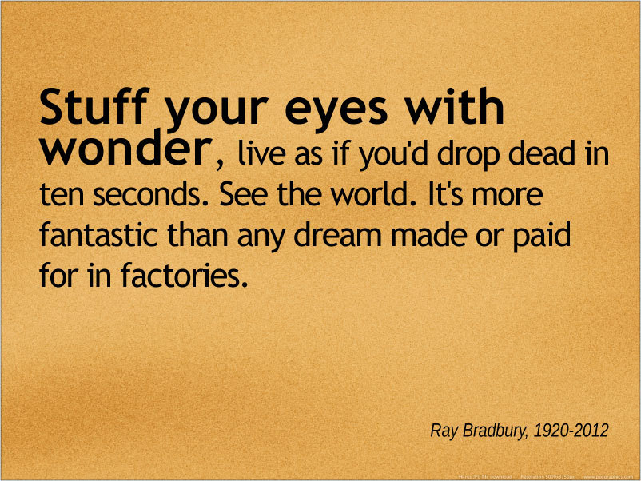
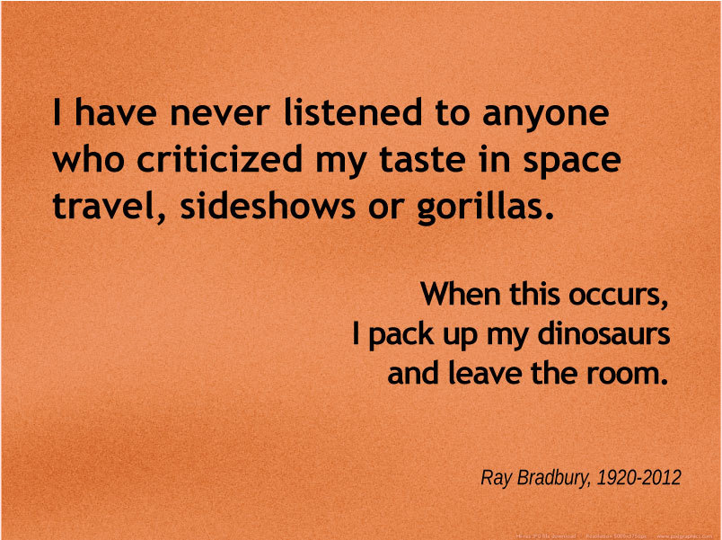
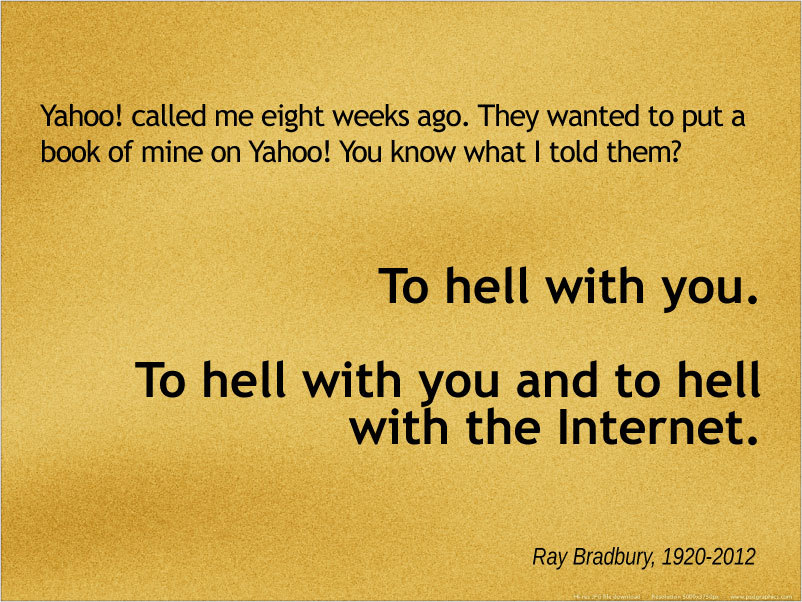

Fri, 08 Jun 2012 04:58:45 · raybradbury · books · journalism
the late ray bradbury



Quoting Ray Bradbury (1920-2012), who passed away on Tuesday, at 91-years-old. He wasn’t one for technology and perhaps not electronic tributes either.
But here’s ours anyway.
Quotes via GoodReads. Click pictures to enlarge.